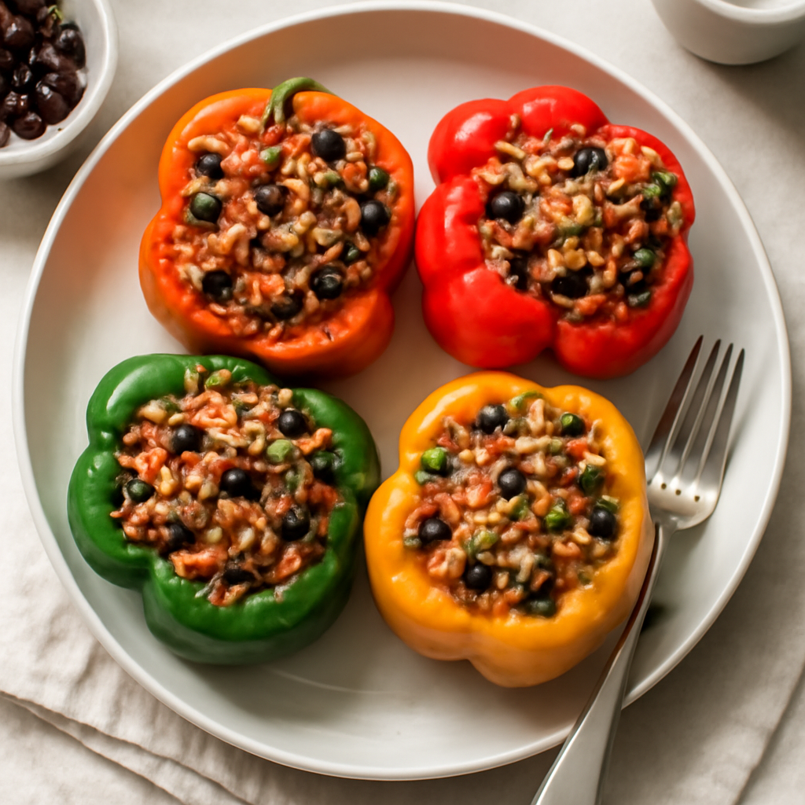

Tuesday — Oven-Baked Stuffed Bell Peppers

Cook Time: 35 minutes
Method: Oven
VegetarianQuickHealthy
Ingredients for 6
- 6 bell peppers (any color)
- 1 cup cooked brown rice
- 1 can (15 oz) black beans (rinsed)
- 1 cup corn (frozen or fresh)
- 1 teaspoon chili powder
- 1 teaspoon cumin
- Salt to taste
Instructions
- Preheat oven to 375°F (190°C).
- Cut tops off bell peppers and remove seeds. Mix rice, beans, corn, chili powder, cumin, and salt in a bowl.
- Stuff peppers with mixture and place in a baking dish. Cover with foil and bake for 25 minutes.
Toddler Notes
- Ensure stuffing is soft and cut peppers into halves for easier handling.
- Serve with a small scoop of plain yogurt if desired.
← Back to weekly plan